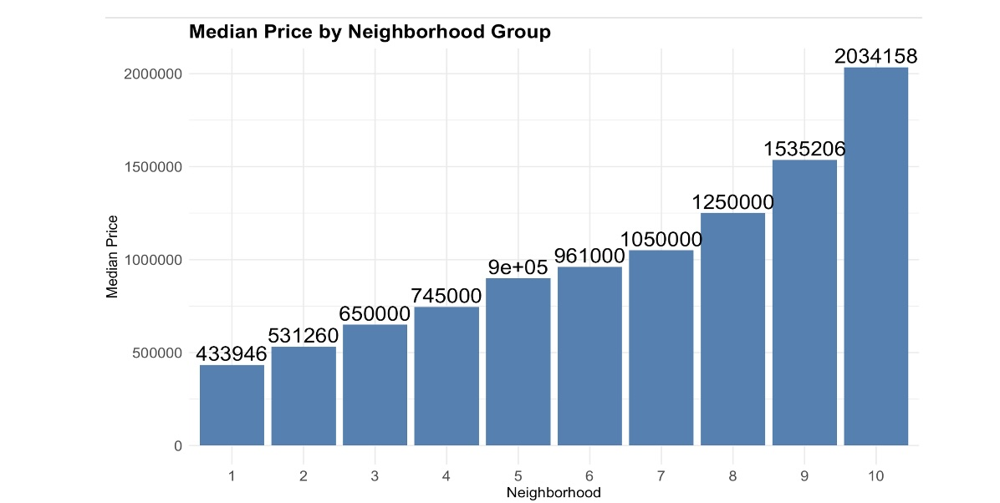

Project Goal:
Analyze the impact of the 2020 Pandemic on Brooklyn Home Prices to determine the directional impact on the market. This project uses regression techniques to isolate the imapct of Covid, holding all other factors constant.
Dataset:
Data provided from the City of New York on Brooklyn home purchase price included data from 2016 – 2020 on all real estate purchases
Methodology:
To isolate the effects of a home in Brooklyn being purchased in Q3 vs. Q4 2020 on purchase price, I first limited analysis to single family homes or single occupant condos (as identified by Building Class, Total Class, and Residential Units). Homes with a reported purchase price of under $10k were excluded from analysis as it is likely their sale was not a part of the general market in Brooklyn, but instead due to inheritance, payment-in-kind, etc. I included variables in the regression to allow the sale of a similar home to be compared across quarters. I controlled for the gross square footage of the home, the year the home was built, and whether the home is a single unit condo or is a single-family home. I grouped the neighborhoods into 10 categories by their median house price to control for the effects of the location of the home. Thus, if a home is in a high value neighborhood, the impact of that neighborhood is controlled for in measuring the difference in price level between Q3 and Q4. The groupings of the Brooklyn neighborhoods are shown below. To determine if there was a significant shift in prices between Q3 2020 and Q4 2020 I utilized a categorical variable that represents the quarter in which a home was purchased for every quarter between Q1 2016 – Q4 2020. By setting the reference level to Q3 2020, the model reports the size of the change in price level between each quarter and Q3 2020.
Key Findings:
This model explains 70% of the variation in home purchase price from Q1 2016- Q4 2020 (adjusted R^2 value of 0.70). The omnibus F test confirms that the explanatory power of the predictors is unlikely to be found through chance alone with significance at the 0.05 level. The Residual Mean Squared Error of this model is $493K. While this is fairly high to predict the exact sale price of a home, the model still allows us to observe the overall directional trends in the market.
Limitations:
When considering efficacy of this model, I examined the distribution and normality of the residuals. The Kolmogorov Smirnov test for normality provides evidence that there may be significant non-normality of the residuals. In addition, a Breusch-Pagan on this model shows significant evidence of heteroskedasticity in the residuals, and the Durbin Watson test shows significant signs of autocorrelation. Although I tried both square root and logarithmic transformations of my target and predictor variables, I was not successful in achieving statistically significant IID normality of the residuals. While this result gives reason for caution when relying on the reported significance of the estimates, the model can still give insight into the directional impact of the covid pandemic. As such, I will primarily be basing my conclusions on the direction indicated by the estimated coefficients on my predictors.
Results:
Based on the model selected, there is evidence that the covid pandemic had a mild but significant negative impact on home purchase price in Brooklyn. The estimated levels of home price both before and after 2020 Q3 were higher, however the estimated difference in price was much greater between Q3 2020 and Q4 2020 than between Q2 2020 and Q1 2020. The estimated effect of a home being sold in Q4 2020 instead of in Q3 2020 is approximately $169k. As stated previously, because the necessary assumptions for linear regression of IID Normal residuals are not met, it is important not place too much confidence in this estimate. Instead, I recommend placing emphasis on the slight negative effect of being sold in Q3 2020 had on home purchase price in Brooklyn (or conversely that if a home was sold in Q4 2020, the home purchase price is expected to be higher).
Key Code Sections: